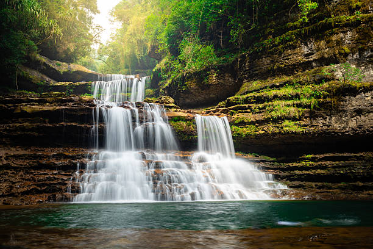
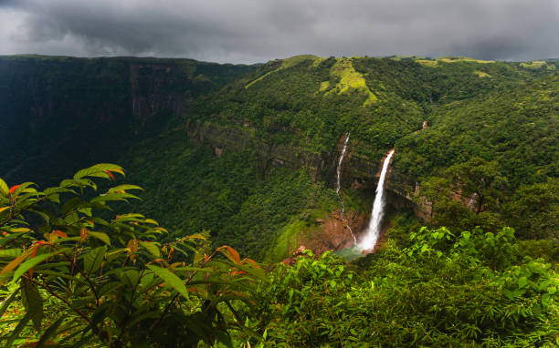
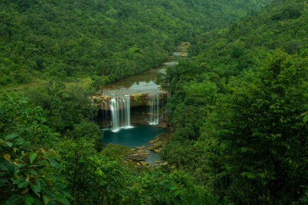
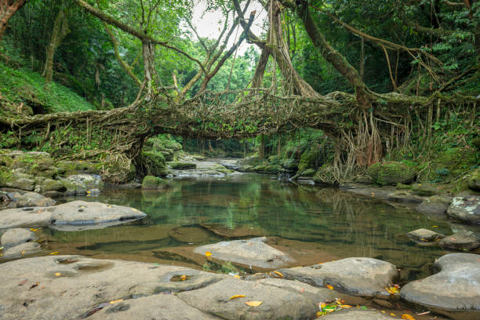
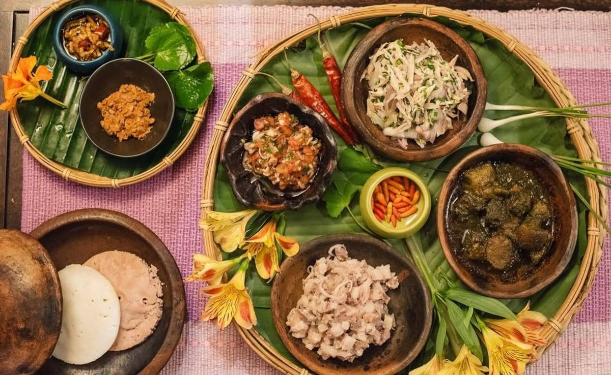

01
Shillong
The charming capital of Meghalaya, surrounded by green pine hills, waterfalls, Umiam Lake, and a pleasant live-music atmosphere.

Discover the beautiful land of clouds, misty mountain gorges, living root bridges, crystal rivers, and vibrant Khasi, Jaintia, and Garo traditions.
Explore Meghalaya ↓Meghalaya is a lush green northeastern hill state celebrated for its torrential monsoon showers, ancient limestone caverns, and UNESCO-recognized living root bio-architecture.
From the musical culture of Shillong and rain-swept canyons of Cherrapunji to the crystal-clear glass waters of Dawki and the Double Decker Living Root Bridge of Nongriat, Meghalaya offers an unforgettable natural wonderland.
Discover some of the most beautiful destinations across Meghalaya.

The charming capital of Meghalaya, surrounded by green pine hills, waterfalls, Umiam Lake, and a pleasant live-music atmosphere.

Famous for spectacular plunging waterfalls like Nohkalikai, misty valleys, deep limestone caves, and lush green panoramas.

Famous for the crystal-clear glass waters of the Umngot River where boats appear to float on pure air, against scenic hill slopes.

Home to the remarkable Double Decker Living Root Bridge, built from living ficus tree roots amidst dense tropical valleys.
Meghalaya's cuisine reflects the rich culinary traditions of Khasi, Jaintia, and Garo communities, prepared with fresh forest herbs, black sesame, and smoked meats.

Matrilineal family customs, rich oral folklore, woodcraft, and community life form the core of Meghalaya's social identity.
Indigenous bio-engineering using rubber tree aerial roots to build strong, living pedestrian bridges across mountain streams.
Vibrant thanksgiving festivals like Nongkrem Dance and Wangala Hundred Drums celebrate agricultural harvest with drums and dance.
Folk songs and traditional musical instruments like the Duitara and Ksing reflect the daily life, nature, and storytelling of the hills.
Discover all 28 states, local food specialties, and centuries of living traditions.
← Back to All States